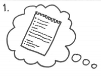
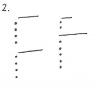
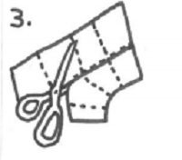
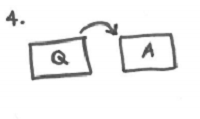
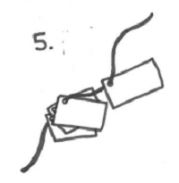
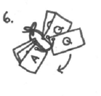

Instructions
-
Step 1
Decide on a topic to write study cards about. Gather your notes for this topic and highlight the key facts and figures that need remembering.
-
Step 2
Organise your facts and figures into bullet points. create questions that could be asked to yield your bullet points as answers.
-
Step 3
Find some coloured card and cut it into uniform rectangles big enough to fit your handwritten questions and answers. You can used lined card if you find this easer to write on. Or you can buy ready made study cards from places like Rymans.
-
Step 4
Once your study cards have been created, write your question onto one side and your answer on the other.
-
Step 5
Make a hole using a hole punch at the top of each of your cards. Use a piece of string to thread through all of your cards to keep them together, tying both ends of the string together. This also allows you to effortlessly flick through your cards when studying.
-
Step 6
Now that your cards are ready , use them to revise. Flick through asking yourself the question and seeing if you get the right answer. For certain things such as vocab you can also use the cards backwards, looking at the definition and trying to guess the right word. It is also usefull to get someone else to test you , this is easy for them as they will have both the questions and answers at their disposal.